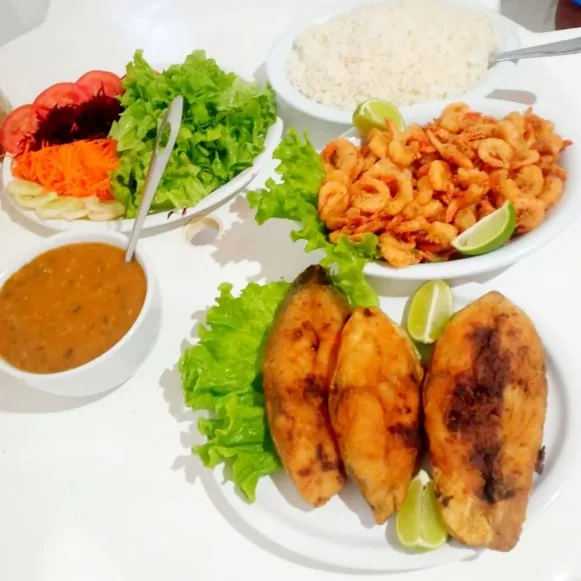
Peixe & refeições
Postas douradas, camarão, arroz, pirão e salada.
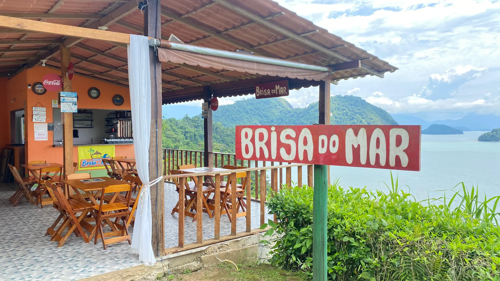
Frutos do mar frescos, varanda debruçada nas ilhas de Paraty e brisa o dia inteiro na Rio-Santos.
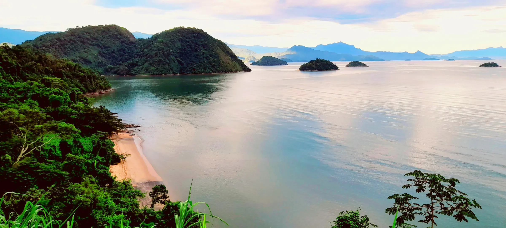
No alto da costeira do Engenho Velho, você almoça vendo o mar calmo e o verde da Mata Atlântica.
Km 564, em Engenho Velho, Paraty.
Mesas à sombra com brisa da baía.
Gramado amplo de frente para o mar.
Moldura clássica para fotos sobre as ilhas.
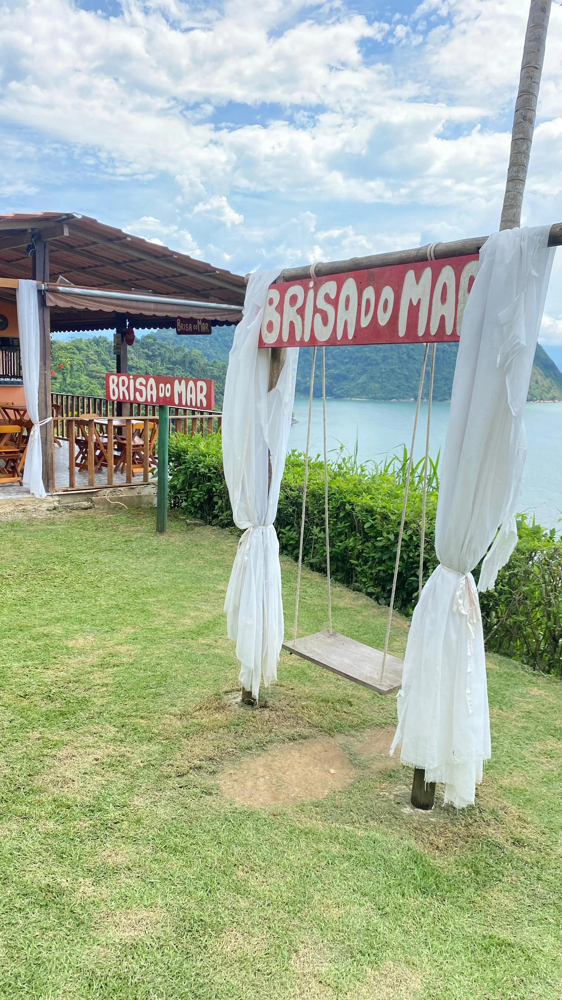
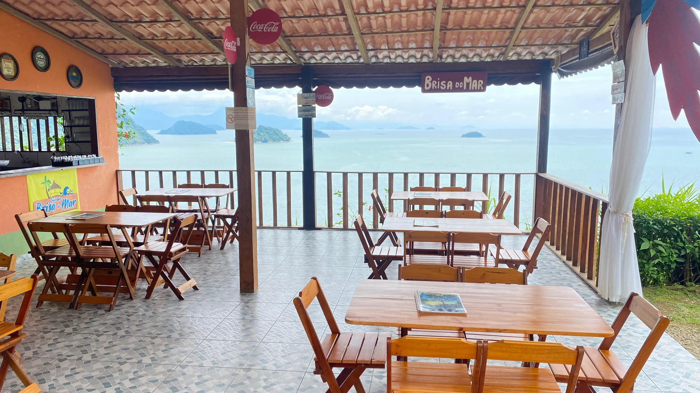
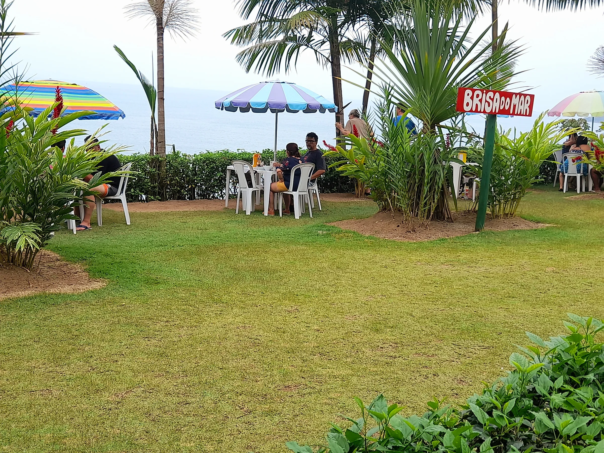
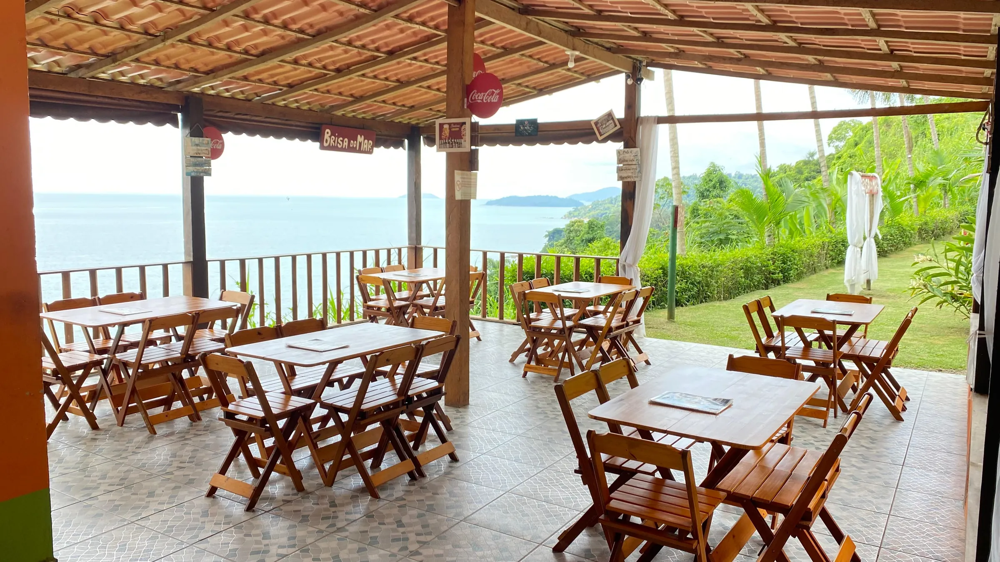
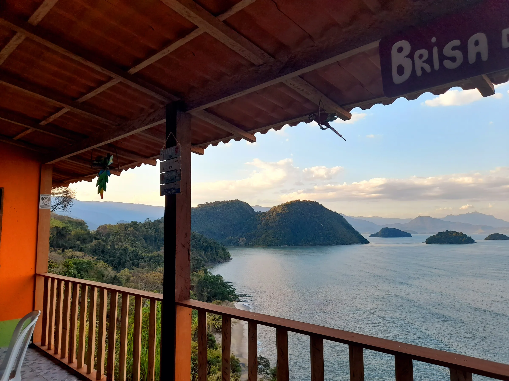
Fotos reais do Quiosque Brisa do Mar no Google Maps.

Postas douradas, camarão, arroz, pirão e salada.
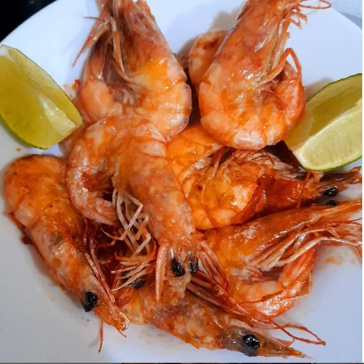
Porção caprichada para beliscar olhando o mar.
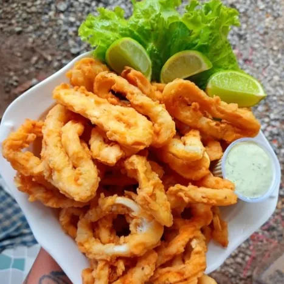
Anéis empanados na hora com molho da casa.
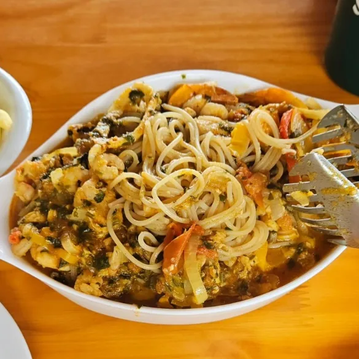
Espaguete bem temperado direto da cozinha.
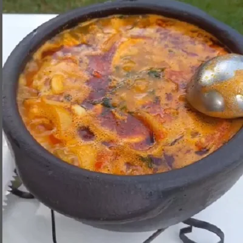
Servida fumegante na panela de barro.
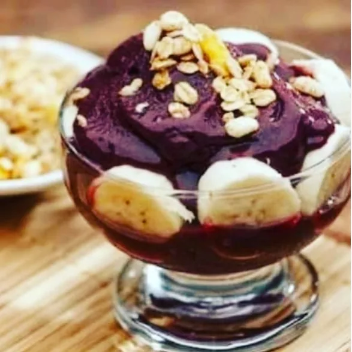
Para refrescar depois da praia ou na viagem.
345 avaliações no Google Maps
Na Rodovia Rio-Santos (BR-101, altura do km 564), em Engenho Velho, Paraty-RJ.
Refeições de peixe e camarão, caldeirada, massa com frutos do mar, lula, porções, bebidas geladas e açaí.
Você pode chegar direto ou mandar mensagem no WhatsApp (24) 99846-5586 para confirmar horário e mesa para seu grupo.
Sim, o balanço Brisa do Mar fica no nosso gramado, de frente para a baía e as ilhas de Paraty.